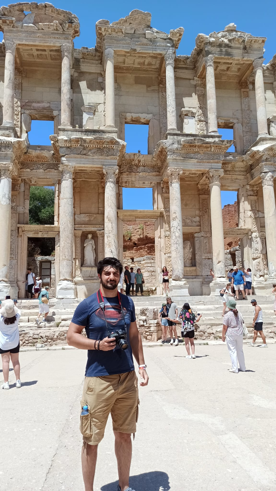
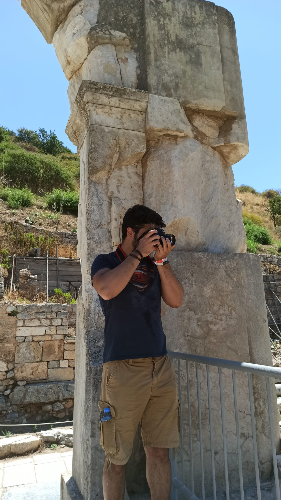

Hello Everyone!
My name is Eray Berk DALKIRAN. I have been doing photography as a hobby for about 2 years. At first, I started this adventure as astrophotography; I continue by including landscape, portrait and architectural photography types. I love taking photos and immortalizing various moments and I try to do it whenever possible! I take various types of photos, but nature and travel photography has a special place for me. Discovering the beauty of nature, capturing the landscapes that inspire me and sharing these moments is a great excitement for me. As a software developer, I am also excited by my interest in technology and my computer programming skills. Writing code and creating projects using technology is a creative process for me. I have experience in web development, mobile application development and data analytics. It is important for me to follow new technologies, continuously improve myself and use them in my projects.
Combining these two passions of my life, I like to take part in projects that combine photography and software. When my technical knowledge of photography is combined with my software skills, I can create creative and unique projects.
On this blog, I will share my experiences, projects, travel diaries and inspirational content about photography and software. My aim is to inspire you based on my own experiences, to provide valuable content to those who read my posts and to share my projects that combine these two passions.
I hope you enjoy your time on this blog and that my posts will inspire you. Thank you for taking part in this journey with me!
Gazi University, Computer Science and Engineering, 3/4
 